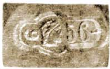
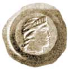
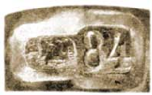
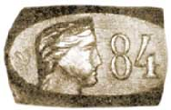

Драгоценные сплавы и их проба

Что такое проба? Под этим словом в обиходной речи понимается небольшой значок, налагаемый пробирными палатками на изделия из драгоценных металлов, чтобы удостоверить доброкачественность состава сплавов. Большинство, конечно, знает, что «пробой» обозначается количество драгоценного металла, выраженное либо в девяностошестых (проба русская), либо в тысячных долях (проба французская, метрическая, заграничная) веса всего употребленного в дело материала.
Так, серебряная вещица 84 пробы, весом в 1 зол., заключает 84 доли чистого серебра и 12 долей припоя, или лигатуры. Если бы та же самая вещица была 900–й (заграничной) пробы, то в ней содержалось бы 86,4 доли чистого серебра и 9,6 долей лигатуры.
У нас также начинает прививаться понемногу метрическая проба. Так, золотая и высокопробная серебряная монета чеканится теперь в России 900–й пробы. Серебряный рубль, весом в 450 долей, заключает в себе 405 долей (т.е. 4 зол. 21 долю) чистого серебра и 45 долей лигатуры.
Если верить преданиям – первым пробирером был Архимед. Он благополучно разрешил заданную Гиероном, тираном Сиракузским, задачу – уличить в мошенничестве золотых дел мастера, похитившего 9/10 золота, отпущенного тираном на новую тиару. Таким образом за Архимедом установилась слава приоритета по определению пробы, оказавшейся равной 100 на 1000, или, по нашему – 9,6.
В сущности, говорить о «пробе» в применении к случаю с тиарой едва ли правильно. Действительно, корона, изготовленная мастером, была, по всей вероятности, составная: из серебряного основания, густо позолоченного или окованного накладным золотом. Если бы предание имело в виду «сплав», оно было бы по существу не ясно, так как одна часть золота на 9 частей серебра дает в смешении почти белый, как серебро, металл: ни один мошенник не решился бы на такую грубую подделку!
Архимеду пришлось при этом решить такую, приблизительно, задачу: «вещь, сделанная из серебра и золота, весит в воздухе 32 зол. 8 дол., а в воде 29 зол. 16 дол. Сколько содержится в ней золота и сколько серебра, если удельный вес золота 19 1/4, а серебра 10 1/2»?
Называя искомый вес золота и серебра соответственно через x и y, получаем:
x + y = 32 зол. 8 дол. = 3080 дол.
X / 19 1/4 + y / 10 1/2 = 32 з. 8 д. – 29 з. 16 д. = 2 з. 88 д. = 280 д.
Отсюда: x = 3 зол. 20 дол. и y = 28 зол. 84 дол.
Ясно, что приведенная задача не что иное, как один из приемов для определения пробы. Но как ни прост на первый взгляд этот гидростатический, или Архимедов прием для нахождения пробы сплавов, он, в действительности, требует большой кропотливости, а во многих случаях прямо неприменим. Так, например, часы, тонкие ювелирные изделия, живопись по драгоценным металлам и другие предметы, портящиеся от соприкосновения с водой и иными жидкостями, не могут быть подвергнуты подобному испытанию. Вполне отрицательные результаты дали бы по этому способу так распространенные ныне «дутые» изделия. Гадательными были бы выводы в том случае, если бы лигатура состояла из нескольких металлов.
Поэтому совершенно естественно, что в практике ювелиров издавна уже выработался иной, гораздо более простой способ, требующий не столько научных знаний, сколько практики и наметанного глаза. Суть приема сводится к сличению на глаз с образцами тех следов, которые остаются на «пробирном камне» от полосок, проведенных испытуемыми сплавами, после обработки их кислотами. Тождественность цвета и оттенков указывает на тождественность содержания драгоценного металла в испытуемом предмете и образцовом сплаве. Эти последние приготовляются для надобностей пробирных учреждений в форме карандашиков различного состава, применительно к узаконенным пробам. Для золотых изделий карандашики делаются из золота 56, 72, 82, 92 и 94 пробы; для серебряных – 84, 88, 91 и 95 пробы.
Сам по себе пробирный камень – продукт естественный. Это очень твердый, черный силикат, не поддающийся действию кислот. Если нужно определить пробу какого–либо изделия из золота, по цвету подходящего одновременно к карандашам 56–й и 72–й пробы, то каждым из них проводят на пробирном камне по черте, а между ними такую же черту испытуемым предметом. Затем все три черты промывают крепкой азотной кислотой, растворяющей прочие составные части, кроме золота, и сличают оставшиеся от промывки линии. Чем больше в сплаве золота, тем гуще золотистая окраска камня и тем меньше просвечивает его натуральный черный цвет. Навык позволяет определять пробу на пробирном камне с большою точностью; она не может, конечно, соперничать с результатами химических анализов, но вполне достаточна для практических целей.
Цели эти бывают двоякие: во–первых, фискальные, – для обложения изделий пошлиной; во–вторых – этические, для обеспечения интересов покупателей против злоупотреблений со стороны торгующих.
II
В законодательствах различных стран мы встречаемся с весьма разнообразным осуществлением опеки и фиска. У нас в России опробование обязательно. Обязательно оно также во Франции, в Австрии, в Швеции и в Португалии. В Италии же и Испании опробование предоставлено почину желающих.
Очень своеобразно поставлено дело контроля в Германии и Англии. В первой, по желанию производителей, установлена правительственная гарантия за некоторый минимум содержания драгоценных металлов в сплавах: для золота 585 на 1000 и для серебра 800 на 1000. Торговцы, не гонящиеся за гарантией для своих изделий, могут изготовлять и сбывать предметы любого качества, раз они находят покупателей. В Англии контроль весьма строгий, но находится всецело в руках цеха, или ювелирной корпорации, которая сама выдает свидетельства, ставить удостоверительные клейма, пломбирует и штампует предметы, изготовляемые цеховыми мастерами.

Рис. 1.
У нас в России дело обставлено наиболее строго, – настолько строго, что, например, предметы, не удовлетворившие, при опробовании, наименьшей из узаконенных проб, подвергаются уничтожению, с возвращением лома собственникам. Изделия, удовлетворившие законным требованиям, клеймятся штампами, строго разграниченными по разрядам. Каждое клеймо состоит из нескольких частей: «удостоверительного знака», – в виде женской головки; двузначного числа, обозначающего пробу; опознательной буквы греческого алфавита, присвоенной той или другой Палатке, и на клеймах для золотых вещей, весом свыше двух золотников – однозначного числа, показывающего вес предмета, в целых золотниках, без дроби (см. рис. 1).

Рис. 2.
Клеймо на очень мелких драгоценных вещах тонкой работы состоит только из удостоверительного знака (рис. 2). На клеймах для серебряных вещей не показывается вес; они разнятся только внешним видом.

Рис. 3.
На предметах весом меньше двух золотников ставится клеймо, как на рис. 3; для всех прочих – как на рис. 4.

Рис. 4.
III
Многие не знают, что, собственно, заставляет избегать в технике ювелирного и монетного дела чистых, не дополненных посторонними примесями, драгоценных металлов.
Первая причина – их мягкость. Серебро химически чистое употребляется только для филиграновых изделий, – настолько оно пластично, мягко, лишено упругости и устойчивости форм. Золото еще мягче. В некоторой обработке (известной под названием «губчатого золота») оно мнется и прессуется, как хлебный мякиш, так что дантисты пломбируют им зубы просто нагнетанием лопаточкой в зубную полость.
Прибавление более твердых металлов, преимущественно меди, значительно влияет на увеличение упругости и сопротивления изнашиванию.
Для золота неизвестно сплавов, особенно выдающихся по твердости. Всякое поделочное золото более или менее мягко и пластично.
Но для серебра найден сплав – из 943 частей химически чистого металла, 33 частей железа, 19 частей кобальта и 5 частей никеля, – который закаливается, как сталь, и может быть употребляем на изготовление десертных ножей и даже некоторых инструментов, употребляемых врачами.
В ювелирной промышленности при понижении пробы драгоценных металлов, едва ли не большую роль, чем твердость, играют дешевизна и блеск изделий.